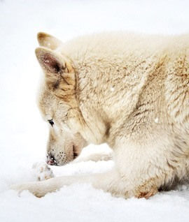

02.
photo gallery

.02


The Siberian Husky is a medium-sized working dog, quick and light on his feet and free and graceful in action. His moderately compact and well furred body, erect ears and brush tail suggest his Northern heritage.
His characteristic gait is smooth and seemingly effortless. He performs his original function in harness most capably, carrying a light load at a moderate speed over great distances. His body proportions and form reflect this basic balance of power, speed and endurance.
This is usually the first question a new puppy owner has. They often have no idea how to go about this fact of life. Your puppy will most certainly have to go to the bathroom sooner or later. Your first job is getting your puppy to do the DO where you want him to. Using a crate will expedite the process. Dogs dislike soiling where they sleep and eat. This fact makes a crate a useful tool for house training.
.03A dog owner has filed a class-action lawsuit against the maker of a popular pet food brand alleging that thousands of dogs have been sickened or died from eating its dry dog foods.
Pet owner Frank Lucido filed the suit on Feb. 5 in U.S. District Court in the Northern District of California against Nestle Purina PetCare Company. Lucido claims he fed his three dogs Beneful, and within a short period of time, two were sick and one was dead...